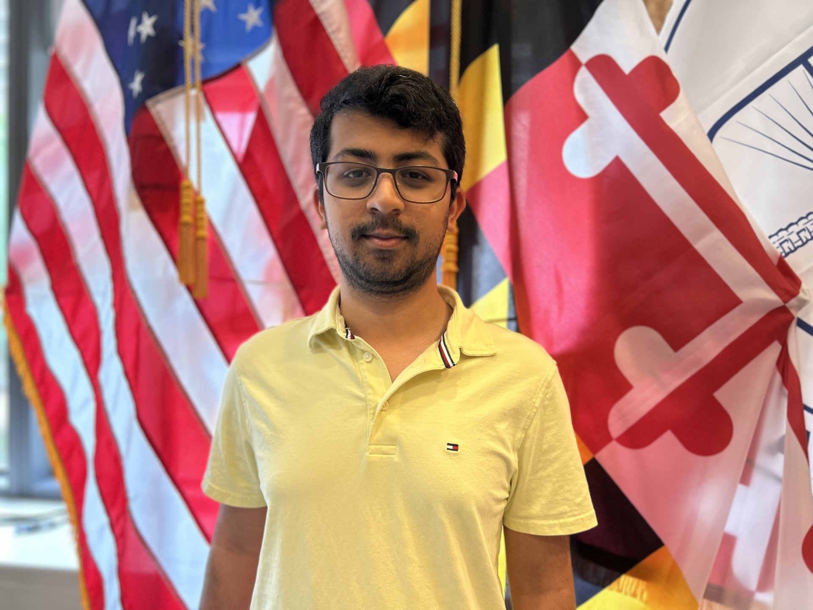

Nishwanth Gudibandla
I am a second year PhD student advised by Tom Trogdon in the Applied Mathematics Department at the University of Washington. I am currently interested in working on PDEs, numerical analysis, and Riemann-Hilbert problems.
Before coming to UW, I earned a B.S. in Physics, Computer Science, and Mathematics from the University of Maryland, Baltimore County. As an undergraduate I worked in computational materials science: in the UMBC STEAM Lab with Can Ataca, and as a three-time Summer Undergraduate Research Fellow at the National Institute of Standards and Technology (NIST) with Daniel Wines, where I used density functional theory and quantum Monte Carlo to study magnetism in two-dimensional materials.

University of Washington, Seattle